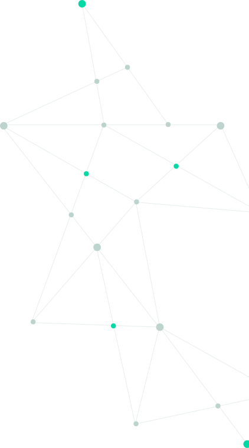
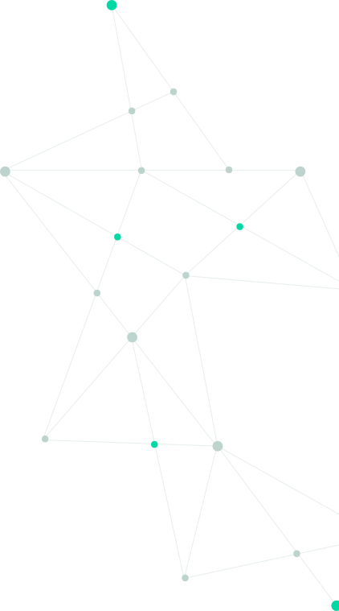

Назад
Назад


 

Система мониторинга церебральных
функций
Придумать обобщающий заголовок

Диагностическое значение
Перинатальная гипоксически-ишемическая энцефалопатия (ГИЭ) является одной из основных причин повреждения ЦНС у новорожденных. Электроэнцефалография (ЭЭГ) имеет диагностическое значение для выбора терапии и определения прогноза заболевания. Данные ЭЭГ используются в классификации Сарната, являющейся наиболее используемой в мире для определения тяжести ГИЭ.
Гибкие возможности
Система Neurofax Nihon Kohden предлагает гибкие возможности мониторинга и идеально подходит для использования в палатах интенсивной терапии. Количественные данные и тренды помогают быстро выявлять закономерности течения процесса и принимать меры реагирования. Кроме того, наша платформа ЭЭГ интегрируется с мониторами показателей жизнедеятельности для четкого обзора основных параметров пациента.
ЭЭГ-система Neurofax
-
38-канальный усилитель со встроенным датчиком SpO2 и CO2 обеспечивает все возможности ЭЭГ
-
Легкая тележка, предназначенная для отделений интенсивной терапии
-
Безвентиляторный панельный ПК с 17-дюймовым сенсорным экраном
-
Активный USB-усилитель с системой 10–20
-
Биполярные входы, например. для ЭМГ, ЭОГ
-
4 входных канала постоянного тока
-
Входы SpO2 /CO2
-
Опция видео
-
Несколько вариантов программного обеспечения
Преимущества использования аЭЭГ
Легкая интерпретация результатов неонатологами и неврологами: не требуется специалист по ЭЭГ для анализа данных
Оценка биоэлектрической активности мозга и ее изменений после введения препаратов
Выявляемые изменения характеристик аЭЭГ предшествуют клиническим нарушениям
Доказанное прогностическое значение параметров аЭЭГ в ряде клинических случаев, таких как асфиксия
Доказанное значение в выявлении эпилептической активности у новорожденных на субклиническом уровне
Более чем 40-летний опыт применения аЭЭГ по всему миру
Однозначно трактуемые паттерны патологических изменений
Автоматическое вычисление и отображение количественных параметров аЭЭГ
Амплидудно-интегрированная програграмма аЭЭГ QP-160AK
-
Тренды аЭЭГ, DSA, FFT и паттерн «вспышка-подавление»
-
До 64 каналов ЭЭГ
-
Тренды SpO2 и EtCO2
-
Проверка импеданса онлайн
-
Центральная база данных для передачи, архивирования, копирования
-
Удаленный просмотр онлайн-данных через сеть
-
Является дополнением для серии EEG-1200